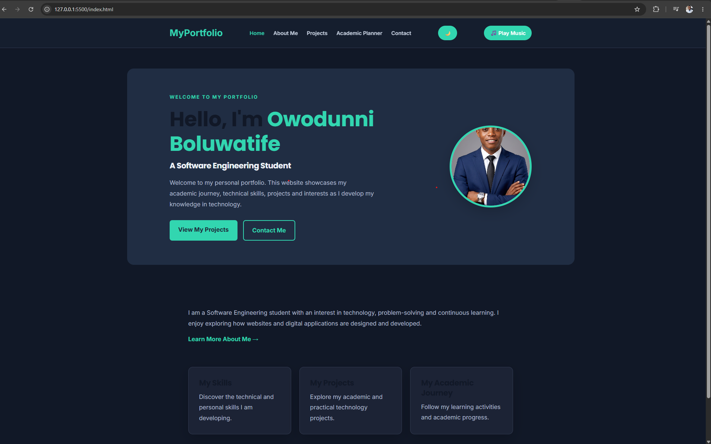
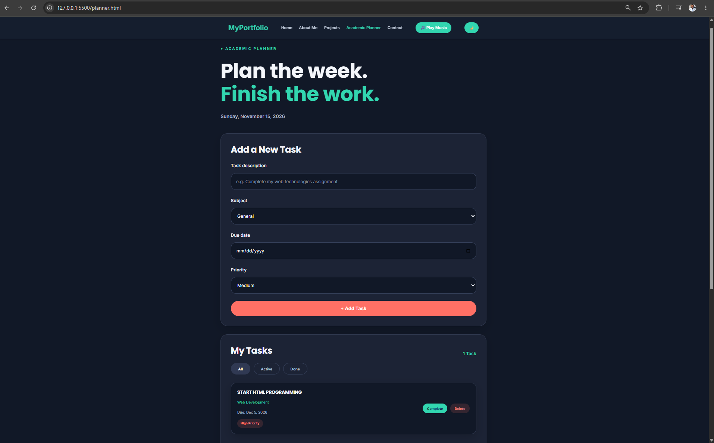
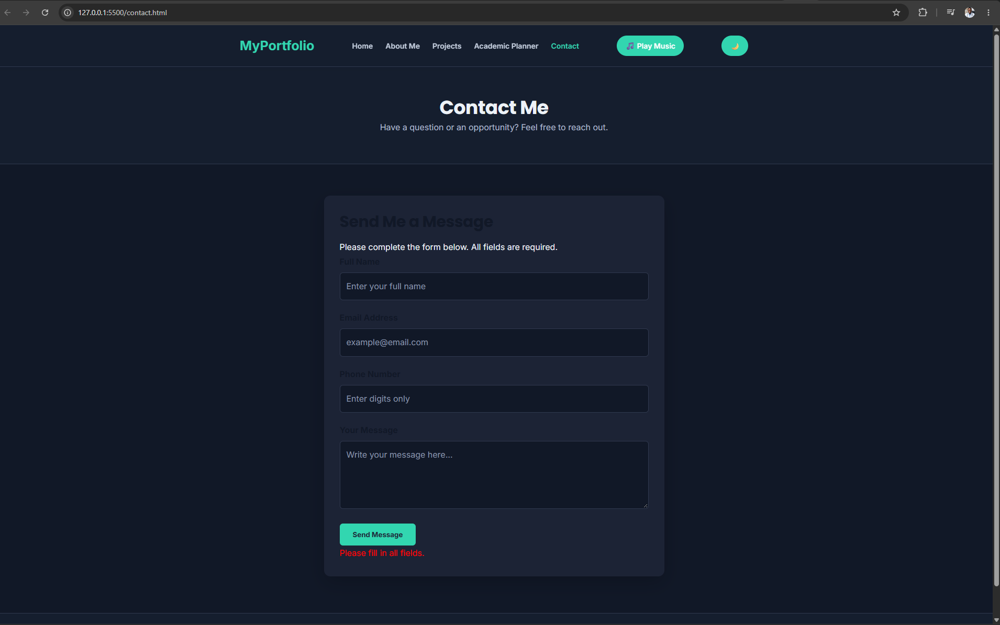

Featured Projects

Student Portfolio Website
A responsive personal portfolio website designed to showcase a student's biography, technical skills, academic achievements and projects.
Technologies: HTML, CSS and JavaScript
View Portfolio
Academic Task Planner
A simple academic management application that allows students to add tasks, monitor assignments, mark completed activities and delete tasks.
Technologies: HTML, CSS and JavaScript
View Academic Planner
Interactive Contact Form
A web-based contact form designed to collect visitors' information. It includes input validation to ensure that submitted details follow the required format.
Technologies: HTML, CSS and JavaScript
View Contact Form